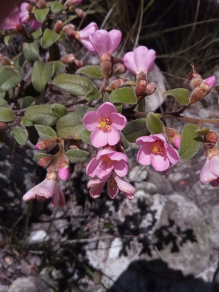

Sarcolaenaceae
Sarcolaena Family
Sarcolaenaceae is a family of evergreen trees and shrubs almost entirely endemic to Madagascar. They are characterized by alternate, simple, entire leaves with stipules, and often showy, 5-merous flowers that are frequently subtended or enclosed by a distinctive cup-like involucre or epicalyx formed from bracts. The fruit, typically a capsule or nut, is often associated with this persistent involucre. The family belongs to the order Malvales.
Overview
The Sarcolaenaceae family comprises about 10 genera and 60-80 species of woody plants, nearly all of which are found only in Madagascar, making it a signature component of the island's unique flora. They inhabit a range of environments, particularly the eastern humid forests and central highlands, where they can be important constituents of the forest canopy or understory.
A distinctive feature of many Sarcolaenaceae is the presence of a cup-like structure (involucre or epicalyx) derived from bracts, located just below the flower or enclosing the fruit. This structure, along with their alternate simple leaves and often numerous stamens, helps distinguish them. The family contains mucilage canals, a trait shared with other families in the Malvales order.
Phylogenetically, Sarcolaenaceae is placed within Malvales, closely related to Dipterocarpaceae (a dominant family of timber trees in tropical Asia) and Cistaceae (rockroses). This relationship highlights interesting biogeographic connections across the Indian Ocean basin, suggesting ancient Gondwanan origins or subsequent dispersal events.
Quick Facts
- Scientific Name: Sarcolaenaceae
- Common Name: Sarcolaena Family
- Number of Genera: Approximately 10
- Number of Species: Approximately 60-80
- Distribution: Endemic to Madagascar (with perhaps one exception).
- Evolutionary Group: Eudicots - Malvales
- Habitat: Humid forests, woodlands, heathlands of Madagascar.
Key Characteristics
Growth Form and Habit
Evergreen trees or shrubs.
Leaves
Leaves are arranged alternately, are simple, and typically have entire margins (smooth edges). They are often somewhat leathery. Stipules are present, sometimes large but usually falling off early (caducous), leaving scars.
Stems
Stems are woody. Secretory canals or cavities containing mucilage are often present in various tissues.
Roots
Normal woody plant root system.
Sexuality and Inflorescence
Inflorescences are typically determinate, often appearing as few-flowered cymes, or sometimes flowers are solitary. A key feature is the frequent presence of prominent bracts, often forming an involucre or epicalyx below or surrounding the flower(s). Flowers are usually perfect (bisexual).
Flowers
Flowers are actinomorphic (radially symmetrical), usually 5-merous, and often relatively large and showy (white, pink, red, or yellow).
- Involucre/Epicalyx: Often present below the calyx, consisting of fused or free bracts, sometimes cup-like, sometimes enlarging and becoming fleshy or woody in fruit (accrescent).
- Calyx: Consists of (3-)5 sepals, which are free or fused at the base, often persistent in fruit.
- Corolla: Consists of 5 petals, free or slightly fused at the base, often large and conspicuous, sometimes twisted in bud (contorted).
- Androecium (Stamens): Stamens are numerous (typically 10 to many), often arranged in bundles or shortly fused at their bases into a tube. Anthers typically open via longitudinal slits.
- Ovary: Superior, composed of (1-)3-5 fused carpels, forming a multi-locular ovary with the same number of locules as carpels. Placentation is usually axile. A single style is present, with a stigma that is capitate (head-like) or lobed.
Fruits and Seeds
The fruit is typically a dry loculicidal capsule (splitting along locule walls) or an indehiscent nut. A distinctive feature is that the fruit is often enclosed or surrounded by the persistent and sometimes enlarged and hardened or fleshy involucre/epicalyx or calyx.
Seeds are few to many per fruit, sometimes winged or possessing an aril.
Chemical Characteristics
Plants produce mucilage in secretory canals. They also contain cyclopropenoid fatty acids, a characteristic shared with other families in the Malvales order.
Field Identification
Identifying Sarcolaenaceae relies heavily on its endemism to Madagascar combined with specific morphological features:
Primary Identification Features
- Habit: Tree or shrub.
- Distribution: Almost exclusively endemic to Madagascar.
- Leaves: Alternate, simple, entire, with stipules (often caducous).
- Involucre/Epicalyx: Presence of a conspicuous whorl of bracts (often cup-like) below or surrounding the flower/fruit is highly characteristic for many genera.
- Flowers: Actinomorphic, usually 5-merous, often showy, with numerous stamens.
- Fruit: Capsule or nut, often enclosed by the persistent involucre/calyx.
Secondary Identification Features
- Stamens: Often numerous and sometimes bundled or fused at base.
- Ovary: Superior, 3-5 carpels.
- Habitat: Malagasy forests or woodlands.
- Mucilage: May be present in tissues.
Seasonal Identification Tips
- Year-round Features: Habit, leaf characteristics (alternate, simple, entire, stipule scars), and geographic location (Madagascar) are key year-round clues.
- Flowering Season: Varies by species. The presence of the involucre/epicalyx below the flower is highly diagnostic when flowering.
- Fruiting Season: The fruit enclosed within the persistent, often modified involucre/calyx is also very characteristic.
Common Confusion Points
Within Madagascar, Sarcolaenaceae might be confused with other tree/shrub families:
- Malvaceae (sensu lato, including Sterculiaceae, Tiliaceae, Bombacaceae): Very diverse in Madagascar. Many have alternate, simple, stipulate leaves and 5-merous flowers with numerous stamens, but stamens are typically monadelphous (fused into a tube around the style). Lack the characteristic involucre/epicalyx of Sarcolaenaceae. Fruits highly variable but different.
- Euphorbiaceae: Often have alternate simple leaves and stipules, but frequently produce latex, flowers are typically unisexual and often highly reduced, fruit is commonly a 3-lobed capsule (schizocarp). Lack involucre/epicalyx.
- Clusiaceae / Guttiferae: Often have opposite leaves and frequently produce yellow/orange latex. Flowers often have numerous stamens but different structure overall. Lack involucre/epicalyx.
- Dipterocarpaceae: Closely related family (Malvales), but primarily found in Asia (only 2 endemic genera in Madagascar/Africa). Have winged fruits derived from persistent sepals, different flower structure, often resinous.
The combination of alternate simple stipulate leaves, the frequent presence of a distinct involucre/epicalyx, 5-merous flowers with numerous stamens, and Madagascar endemism is highly indicative of Sarcolaenaceae.
Field Guide Quick Reference
Look For:
- Tree/shrub
- Endemic to Madagascar
- Leaves alternate, simple, entire
- Stipules present (often caducous)
- Involucre/Epicalyx often present below flower/fruit
- Flowers actinomorphic, 5-merous
- Stamens numerous
- Ovary superior
- Fruit a capsule or nut (often enclosed)
Key Variations:
- Presence/absence/form of involucre
- Fruit type (capsule vs nut)
- Flower color
Notable Examples
The family includes several genera endemic to Madagascar:

Sarcolaena spp.
(Various species)
The type genus for the family. Trees or shrubs characterized by an involucre that becomes fleshy and brightly colored in fruit, surrounding the capsule. Found in eastern humid forests and central plateau woodlands.

Schizolaena spp.
(Various species)
Another significant genus of trees and shrubs. Their involucre is distinctive as it splits open irregularly or into lobes as the fruit develops, rather than remaining cup-like or becoming fleshy. Common in eastern rainforests.
Phylogeny and Classification
Sarcolaenaceae belongs to the large eudicot order Malvales. This order includes well-known families like Malvaceae (mallows, cotton, hibiscus, cacao, baobabs), Thymelaeaceae (daphnes), Bixaceae (annatto), and Cistaceae (rockroses).
Molecular phylogenetic studies place Sarcolaenaceae in a well-supported clade with Dipterocarpaceae (a major family of timber trees in tropical Asia) and Cistaceae (mostly shrubs of Mediterranean climates). Sarcolaenaceae is often resolved as sister to Dipterocarpaceae, with Cistaceae sister to that pair. This grouping highlights fascinating biogeographic connections, linking the endemic Malagasy Sarcolaenaceae with the predominantly Asian Dipterocarpaceae and the largely Mediterranean/North American Cistaceae, suggesting ancient origins and dispersal across the Indian Ocean region.
Position in Plant Phylogeny
- Kingdom: Plantae
- Clade: Angiosperms (Flowering plants)
- Clade: Eudicots
- Clade: Rosids
- Order: Malvales
- Family: Sarcolaenaceae
Evolutionary Significance
Sarcolaenaceae is important for several evolutionary reasons:
- Madagascar Endemism: Represents a significant evolutionary radiation confined almost entirely to Madagascar, making it key to understanding the island's unique biodiversity and evolutionary history.
- Biogeography: Its close relationship with the Asian Dipterocarpaceae provides strong evidence for ancient land connections or dispersal routes across the Indian Ocean, likely dating back to Gondwanan times or early Cenozoic India-Madagascar proximity.
- Morphological Features: The evolution of the involucre/epicalyx and its role in fruit protection or dispersal is a notable morphological specialization within Malvales.
- Phylogenetic Placement: Helps resolve relationships within the Malvales order, particularly linking disparate geographic groups (Madagascar, Asia, Mediterranean).